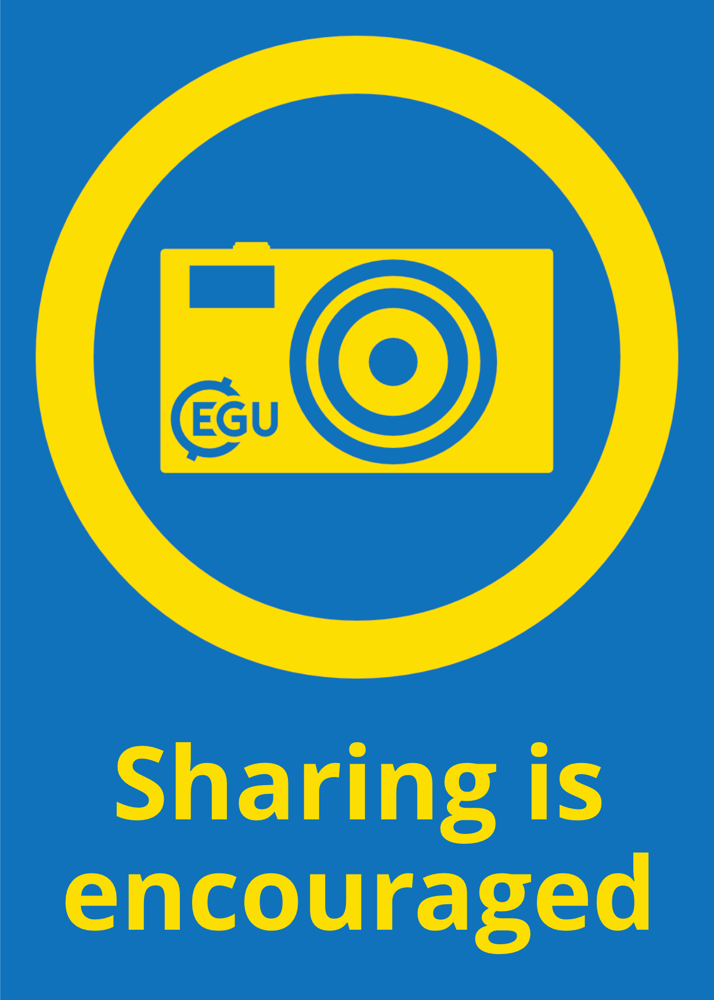
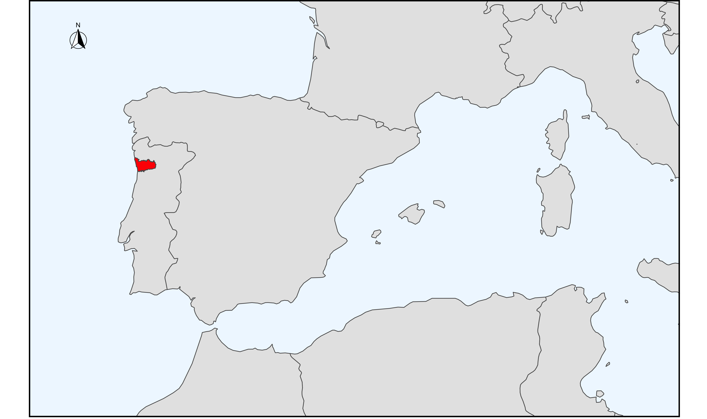
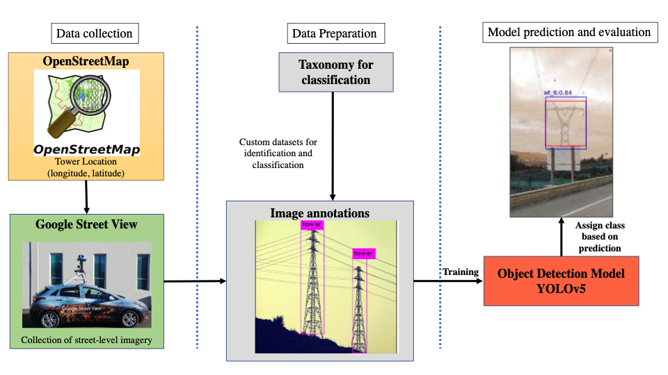
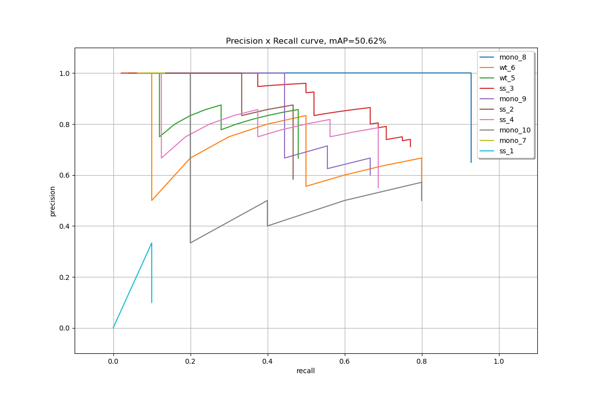

class: center, middle count: false <!-- background-image: url(https://www.europeanfiles.eu/wp-content/uploads/2018/09/AI-copie-800x444.jpg) --> <!-- background-color: white; --> background-image:url(img/sfondo.jpeg) background-opacity: 0.5 background-size:cover; <h1 style="color:black;margin-top:150px;font-size: 48pt;" > Building exposure datasets using street-level imagery and deep learning object detection models </h1> <h3 style="color:#4925EF;position: relative;top: 50px;font-size: 36pt;" > Luigi Cesarini <h3 style="color:#4925EF;position: relative;top: 0px;font-size: 28pt;"> Vienna, 25th May 2022 </h3> </h3> <!---span style="line-height: 280pt;"></span !---> <img src='img/egu_ospp_label_blue.png' style="width:12.5%;position: absolute; left:10px;top:515px;">  --- # Risk Analysis .cols[ .fifty[ <img src='img/Factors-That-Influence-Risk-Include-Exposure-Vulnerability-and-Hazards.png' style="width:100%;height:100%;"> ] .fifty[ <ul style="line-height:20pt"> <li><span style="font-weight:600;color:green">Hazard</span>: defined as the potential occurrence of a natural or human-induced physical event.</li> <br> <li><span style="font-weight:600;color:indianred">Vulnerability</span>: defined as the propensity or predisposition to be adversely affected by an hazard.</li> <br> <li> <span style="font-weight:600;color:dodgerblue">Exposure</span>: defined as the presence of people; livelihoods; species or ecosystems; environmental functions, services and resources; infrastructure; or economic, social or cultural assets in places and settings that could be adversely affected</li> </ul> ] ] --- # Risk Analysis .cols[ .fifty[ <img src='img/Factors-That-Influence-Risk-Include-Exposure-Vulnerability-and-Hazards.png' style="width:100%;height:100%;"> ] .fifty[ <ul style="line-height:20pt;"> <li style="opacity: 0.15;"><span style="font-weight:600;color:green;">Hazard</span>: defined as the potential occurrence of a natural or human-induced physical event.</li> <br> <li style="opacity: 0.15;"><span style="font-weight:600;color:indianred;">Vulnerability</span>: defined as the propensity or predisposition to be adversely affected by an hazard.</li> <br> <li> <span style="font-weight:600;color:dodgerblue">Exposure</span>: defined as the presence of people; livelihoods; species or ecosystems; environmental functions, services and resources; infrastructure; or economic, social or cultural assets in places and settings that could be adversely affected</li> </ul> ] ] --- # Exposure modelling For large areas, the general approach requires disaggregating to fine resolution coarse resolution data. <ul> <li style="line-height: 30pt;">Population data</li> <li style="line-height: 30pt;">GDP data</li> <li style="line-height: 30pt;">Land use area</li> <li style="line-height: 30pt;">Road Density</li> </ul> In smaller areas, exposure information come from different sources that are not really easy to control. -- <div align="center" style="border-style: solid;border-color: dodgerblue;padding: 30pt,0,30,0; position:relative;top:70px;"> Volunteered Geographic Information and user-generated content to bridge the gap between the two resolution </div> <!-- --- # Object Detection **Definitions much??** <img src="img/types.png" alt="idVSclsVSseg" style="width:100%;height:100%;"> Objected detection is defined as the task of predicting the location of on object in an image along with the class associated to the object --> --- # Study Case: Exposure modelling of transmission towers OpenStreetMap for the power grid. Transmission towers are vulnerable assets to several hazards like: - Strong winds - Earthquake - Floods - Ice loads ### Study area for the pilot Porto (Portugal) Around 6000 towers.  --- # The methodology An automated start-to-end pipeline that returns relevant features of towers  --- <!-- # Study area Around 6k towers and multiple POV <iframe src="MapStudyArea.html" style="width:100%; height:480px;" ></iframe> --- --> # Development of the taxonomy and training of the model <img src="img/taxonomy.png" align = "left" width="40%"> .fifty[ <p style="font-family: sans-serif;"> <center> <a style="font-weight: 600;">Two tasks</a> <br> <li> Identification </li> <li> Classification </li> </center> </p> <img src="img/datasets.png" align="right" width="50%"> <figure> <img src="https://miro.medium.com/max/1400/1*xVMw-joK4JGtzXfSPcTQaw.png" align="right" width="50%"style="margin-top: 10pt;" > <figcaption style="font-style:italic;text-align:right;position: relative;color:grey;font-size:8pt;opacity:0.85;" >Source:<a href="https://roboflow.com/annotate" style="opacity: 0.85;">https://roboflow.com/annotate</a></figcaption> </figure> ] --- # Results <img src="img/tow4024440010_30062021_jpg.rf.775219d6caf04bf4ca4252ecb5d228f7.jpg" class="fish1" height = "400px" style="top: 120px;"> <p style="position:absolute;left: 500px;top: 100px;"> <span style="font-weight:700;">Mean Average Precision</span> <br> Identification: 84% <br> Classification: 51% </p> <img src="img/tow1390707950_jpg.rf.eb3793250ab1c1cdf201773d039f8244.jpg" class="fish2"> --- # Results <p style="position:absolute;left: 500px;top: 100px;"> <span style="font-weight:700;">Mean Average Precision</span> <br> Classification: <span style="border-color:red;border-style:solid";>62%</span> </p>  --- # Spatial distribution of the predictions <img src='img/map.png' style="width:100%;"> --- # Conclusions/Considerations/Limitations ### Case-study related and more general <ul style="line-height:40pt"> <li>Unlock exposure modelling at large and in remote areas</li> <li>Accurate predictions with small number of images</li> <li>Object agnostic methodology</li> <li>Hard to find training images</li> <li>Obstacles in the built environment</li> <li>Street-level imagery metadata not retrievable</li> <li>Using unsupervised algorithm to automate image annotations</li> </ul> --- <img src='img/egu_ospp_label_blue.png' style="width:12.5%;position: absolute; left:10px;top:15px;"> <h1 style="text-align: center; font-style: italic; position: relative;top: 35%;">Thank you for your attention!</h1> <h2 style="text-align: center;position: relative;top:40%;"> Want to reach out?</h2> <img src="img/GitHub-Mark-64px.png" style = "position: absolute; top:500px;"> <div style = "position: absolute; top:520px;left:160px;"> <a href="https://github.com/luigicesarini">https://github.com/luigicesarini</a> </div> <div style = "position: absolute; top:620px;left:160px;"> <a href="luigi.cesarini@iusspavia.it">luigi.cesarini@iusspavia.it</a> </div> <img src="https://upload.wikimedia.org/wikipedia/commons/thumb/5/5e/ResearchGate_icon_SVG.svg/1200px-ResearchGate_icon_SVG.svg.png" style = "position: absolute; top:500px; left:480px;" width="64px"> <div style = "position: absolute; top:520px;left:560px;"> <a href="https://www.researchgate.net/profile/Luigi-Cesarini">ResearchGate</a> </div> <img src="https://cdn.icon-icons.com/icons2/3041/PNG/512/linkedin_logo_icon_189225.png" style = "position: absolute; top:600px; left:480px;" width="64px"> <div style = "position: absolute; top:620px;left:560px;"> <a href="https://www.linkedin.com/in/luigi-cesarini-40826ab4/">Linkedin</a> </div> <!-- <ul style="line-height:30pt"> <li>How a neural network trains</li> <li>Single stage and Two-stage detectors</li> <li>Architecture of the neural network</li> <li>Evaluation metrics</li> <ul> <li>Intersection over union</li> <li>AP, AR</li> <li>Small object, big object</li> </ul> <li>Extraction of height from an image</li> <li>Photogrammetry</li> <li>Depth map for height</li> </ul> -->